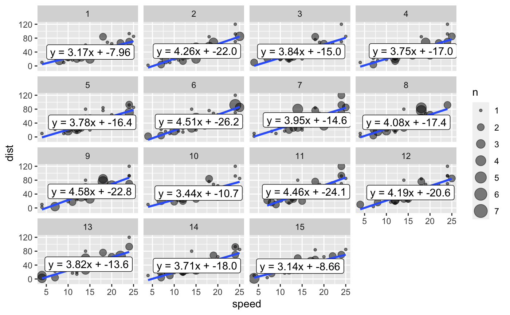

facet_bootstrap.RdResample with replacement
facet_bootstrap( n_facets = 9, prop = 1, nrow = NULL, ncol = NULL, scales = "fixed", shrink = TRUE, strip.position = "top", seed = sample(2000:3000, 1) )
| n_facets | number of facets |
|---|---|
| prop | numeric proportion to sample, defaults to .2 |
| nrow | how many rows for facet grid |
| ncol | how many columns for facet grid |
| scales | should x and y scales be determined independently for facets |
| shrink | not sure what shrink does |
| strip.position | where facet label should go |
| seed | randomization start point |
library(ggplot2)#> Warning: package ‘ggplot2’ was built under R version 3.6.2set.seed(1323) ggplot(data = cars) + aes(x = speed) + aes(y = dist) + geom_count(alpha = .5) + facet_bootstrap(n_facets = 1) + facet_bootstrap(n_facets = 2) + facet_bootstrap(n_facets = 3) + ggxmean::geom_lm() + ggxmean::geom_lm_formula() + facet_bootstrap(n_facets = 15)